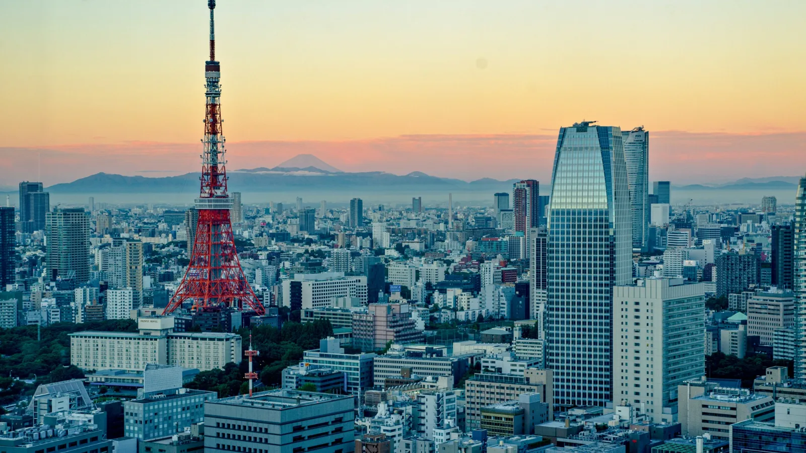

The short answer
Group the city by area so you never cross it twice in a day. Day 1, east: Asakusa and Senso-ji, the Sumida river, Tokyo Skytree, then Ueno and Ameyoko. Day 2, west: Meiji Jingu, Harajuku and Omotesando, Shibuya Crossing and Shibuya Sky, Shinjuku at night. Day 3: breakfast at the Tsukiji Outer Market, teamLab, then Ginza or Akihabara. Book teamLab and Shibuya Sky before you fly.
Day 1: Asakusa, Skytree and Ueno (old Tokyo)
- 8:00 Senso-ji in Asakusa — Tokyo's oldest temple, calm early in the morning; the Nakamise shopping street opens around 10:00.
- 10:30 Sumida river — walk across to Tokyo Skytree (about 20 min), or take a short river cruise. Go up the Skytree only on a clear day.
- 14:00 Ueno — Ueno Park and its museums (the Tokyo National Museum is the big one), then the Ameyoko market street under the train tracks.
- Evening: izakaya under the tracks in Ueno or Yurakucho.
Day 2: Meiji Jingu, Shibuya and Shinjuku (neon Tokyo)
- 9:00 Meiji Jingu — the forest shrine next to Harajuku station, free entry.
- 11:00 Harajuku and Omotesando — Takeshita Street for the crazy side, Omotesando for architecture and cafés.
- 15:00 Shibuya — the famous scramble crossing, the Hachiko statue and Shibuya Sky for the rooftop view (sunset slots sell out first).
- 19:00 Shinjuku — the free observatory of the Tokyo Metropolitan Government Building, then Omoide Yokocho and Golden Gai for tiny bars.
Day 3: Tsukiji, teamLab and Ginza
- Morning: the Tsukiji Outer Market for sushi, tamagoyaki and grilled seafood (most stalls close early afternoon, some on Sundays and Wednesdays).
- Late morning: teamLab — Planets in Toyosu (you walk barefoot through water) or Borderless in Azabudai Hills. Timed tickets, book ahead.
- Afternoon and evening: Ginza department stores and food halls, or Akihabara for anime, games and electronics. End with the lights of Tokyo Tower.
Want to see Mount Fuji? Swap day 3 for our Mount Fuji day trip from Tokyo.
Getting around
Use a Suica or PASMO on every train, subway and bus — see our Suica and PASMO guide. If you ride the subway a lot, the Tokyo Subway Ticket (24, 48 or 72 hours, for visitors) covers all Tokyo Metro and Toei lines; it does not include JR lines like the Yamanote. Avoid rush hour (about 7:30–9:30) with luggage.
Where to stay
| Area | Good for |
|---|---|
| Shinjuku | Transport hub, nightlife, many hotels at every price |
| Shibuya | Lively, central for day 2, good for first-timers |
| Tokyo Station / Ginza | Shinkansen to Kyoto and Osaka, airport buses |
| Asakusa / Ueno | Cheaper, traditional feel, Narita Skyliner from Ueno |
Compare hotels in Tokyo — prices jump in cherry blossom season and Golden Week.
What to book in advance
- teamLab Planets / Borderless and Shibuya Sky — timed tickets, sunset slots go first. See tickets.
- Ghibli Museum — tickets only for set dates, released about a month ahead and sold out fast.
- Popular sushi and restaurants — reserve a few days ahead.
Tips
- Landing at Narita or Haneda? Read Narita and Haneda to Tokyo.
- Continuing to Kyoto? See Tokyo to Kyoto and Tokyo, Kyoto and Osaka in 7 days.
- Learn what to do in a quake: earthquakes in Japan for tourists.
Times, prices and rules are indicative and can change — always check before you travel.
Checked against official sources. Rules and prices change: always confirm on these sites before you travel.
Plan your trip to Tokyo
Some links are affiliate links: booking through them costs you nothing extra and helps keep 687 free.
Three Tokyo days, without crossing the city twice.
In 687 Japan your Tokyo days are grouped by area, with the train lines between stops and food nearby when you need it. If rain or crowds change the plan, NOW rebuilds the rest of the day.
Sources
Checked against these official sites in November 2026. Prices and rules can change: always confirm before you travel.